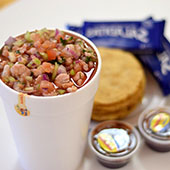
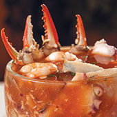
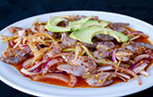
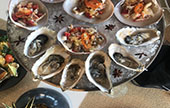
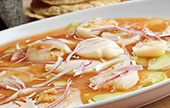
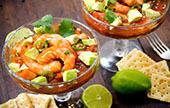
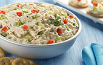
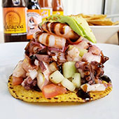

| Ceviche de camaron y pescado |
Es francamente delicioso, como tú sabes, existen muchas formas de preparar ceviche y la imaginación es lo único que nos limita. Esta versión de ceviche de pescado, pulpo y camarón, te hara querer quedarte mas tiempo para disfrutar con tus amigos. |
 |
$180.00 MXN(1 lt) |
| Campechana |
¿Qué tal una fresca campechana de mariscos? Es muy nutritiva por su alto contenido proteico y bajo en carbohidratos, así que ¡Te esperamos! |
 |
$130.00 MXN (385 ml) |
| Aguachile |
Sus ingredientes principales son los camarones, chiles frescos o secos, limón, cebolla, pepino y agua. Temporada perfecta para explorar y disfrutar sabores distintos, originales y exquisitos. Y definitivamente, el aguachile tiene estas sabrosas cualidades. |
 |
$120.00 MXN(1 lt) |
| Ostiones |
Ven y prueba los deliciosos ostiones en su concha que preparamos, te aseguramos que te van a gustar. |
 |
$197.00 MXN (Docena) |
| Callo de hacha |
Uno de los mariscos consentidos del Pacífico: el delicioso y siempre fresco callo de hacha. También, como sabemos que hace calor la mayor parte del tiempo para que te refresques con una cerveza de cortesía. |
 |
$210.00 MXN (130 grs) |
| Coctel vuelve a la vida |
Vuelve a la vida, un cóctel que te devolvera la vida! Ostiones, pulpa de jaiba y camarones son algunos de los ingredientes que contiene este platillo para que puedas disfrutar un delicioso cocktail de mariscos, que sin duda alguna debes venir a probar. |
 |
$198.00 MXN (533 ml) |
| Dip de surimi |
El surimi es un alimento de fácil digestión y una excelente fuente de proteínas para completar la tarde o noche botanera perfecta. Este Dip de surimi con queso crema va perfecto con unas chips de papas caseras ven a probarlo. |
 |
$95.00 MXN |
| Tostadas |
Sorprendete con nuestras riquísimas y prácticas tostadas de ceviche de pulpo, camaron y pescado. Te encantará su frescura y sabor ¡no podras dejarlas de probar! |
 |
3 x $95.00 MXN |
 Lazaro cardenas #499 Puerto Vallarta
Lazaro cardenas #499 Puerto Vallarta Lu-Vi 10:00-23:45, Sa-Do 09:00-23:45
Lu-Vi 10:00-23:45, Sa-Do 09:00-23:45 322 222 8571
322 222 8571